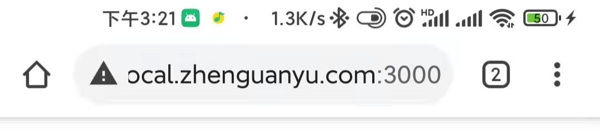

前言
最近作者在开发移动端会议室系统的过程中，备受跨设备兼容的困扰。前车之鉴，后人之师，在此我把遇到、解决过的兼容性问题列举出来，一是为了做个记录，二也是给大家提供参考。
iOS上底部安全区的适配
iOS取消实体home键，改为全面屏手势后，在屏幕底部展示了一个小黑条，而如果写网页的时候不加处理，内容就会被小黑条覆盖掉。解决方法如下：
1
2
3
4
5
| .container {
// 底部安全区适配
padding-bottom: constant(safe-area-inset-bottom); // iOS老版本写法，为了保持向前兼容，也要加上，且要放到前面
padding-bottom: env(safe-area-inset-bottom);
}
|
将以上样式应用于页面外部容器/定位为fixed且bootom为0（即固定在页面底部显示）的元素即可。
对于安卓机型，作者测试了一下小米10 pro，该机型在开启底部小黑条时，是在屏幕最下方单独为小黑条保留了一部分空间，没有侵入app，所以无需额外设置。
IOS企业微信端对于fixed元素位置显示错误
如下两图所示。其中左图为有问题的页面，右图为正常页面。
bug原因猜测：
如图所示，页面最外层容器没有铺满当前页。将最外层容器高度铺满页面后，bug被修复：
1
2
3
| #app {
min-height: 100vh;
}
|
height: 100vh的问题
在移动端使用100vh可能会出现双重滚动条/底部fixed元素被盖住。拿移动端的chrome举例，浏览器把地址栏也算入到了可视高度内（下滑地址栏可隐藏），因此当展示地址栏的时候，100vh就要比实际的可视高度要高，因此会出现双重滚动条/底部fixed元素被盖住。
解决方法是：
1
2
3
4
5
6
7
| body {
min-height: 100vh;
min-height: -webkit-fill-available;
}
html {
height: -webkit-fill-available;
}
|
参考资料：CSS fix for 100vh in mobile WebKit
大分辨率图片加载不出来的问题
仅安卓端企业微信内置浏览器有问题
经过测试，7088*10630分辨率的图片，安卓端企业微信内置浏览器无法加载出（合理推测大分辨率的加载不出）
解决方法是在上传图片的时候制定图片的最大分辨率，超过分辨率则用canvas降分辨率
1
2
3
4
5
6
7
8
9
10
11
12
13
14
15
16
17
18
19
20
21
22
23
24
25
26
27
28
29
30
31
32
33
34
35
36
37
38
39
40
41
42
43
44
45
46
| async function resizeImg (file) {
function getBase64(file) {
return new Promise((resolve, reject) => {
const reader = new FileReader()
reader.readAsDataURL(file)
reader.onload = () => resolve(reader.result)
reader.onerror = (error) => reject(error)
})
}
function getImg(src) {
return new Promise((resolve) => {
const img = new Image()
img.onload = function () {
resolve(img)
}
img.src = src
})
}
const canvas = document.createElement('canvas')
const src = await getBase64(file)
const img = await getImg(src)
const x = 1600
let width = img.width
let height = img.height
if (width > x) {
height *= x / width
width = x
}
canvas.width = width
canvas.height = height
const ctx = canvas.getContext('2d')
ctx.drawImage(img, 0, 0, width, height)
return new Promise((resolve) => {
canvas.toBlob((blob) => {
resolve(blob)
})
})
}
|
提交上传图片时，在formData里append处理后的图片即可。
1
2
3
| const form = new FormData()
const blob = await resizeImg(file)
form.append('file', blob)
|
安卓端文字偏上，某些机型尤其明显（使用flex垂直居中时）
！不知道咋解决，有人知道的话私信我一下谢谢～（叹气）
不同逻辑分辨率的设备兼容
鉴于现在主流浏览器对于viewport 单位 (vw, vh, vmin, vmax)支持良好，因此在对于不同逻辑分辨率的设备，可以使用postcss-px-to-viewport插件，来将px单位改成vw单位。
需要注意的是:
postcss-px-to-viewport这个插件npm源与github源不一致，npm源会导致一些选项，如include选项无效，而由于npm的bug，在docker中用npm安装github源的文件会失败，从而导致自动部署失败。
参考资料：vant 浏览器适配- 经过
px到vw的转换后，对于小数点像素（如1.3456px），不同的浏览器有不同的处理策略，可能会导致使用同样样式的线条，有的粗有的细的问题